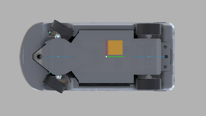

OmegaSim Wiki – die Idee dazu stammt von Gnen54. Hier stehen die offenen Artikel von Nutzer Luuke42 unter der Lizenz CC BY-SA 4.0.
Lenkeinschlag prüfen
Stand dieses Artikels: OmegaSim – vom 04.11.2026 · Firmware des Autos: nicht bekannt (OmegaSim liest die Firmware-Version nicht aus)
Dieser Text wurde mithilfe von KI erstellt (Claude) und ist nicht in jedem Punkt von Menschen geprüft. Fehler bitte direkt verbessern oder auf der Diskussionsseite melden, siehe Mitmachen. Die öffentliche Fassung auf luuke42.github.io/omegasim kann älter sein als der hier beschriebene Stand.
Lenkeinschlag prüfen beschreibt, wie man beim Konstruieren einer Karosserie in Fusion kontrolliert, ob die Vorderräder bei vollem Lenkeinschlag frei in den Radhäusern laufen. Dazu gibt es ein Fusion-Archiv des Porsche-Kurzchassis mit lenkbarer Vorderachse und das Fusion-Add-In Lenkeinschlag, beide von Gnen54 auf GitHub.


Was man braucht
- Autodesk Fusion
- Das Fusion-Archiv CH-PorscheKurzChassisKomplett.f3z: eigene Nachkonstruktion des Porsche-Kurzchassis mit Drehgelenken an den Vorderrädern (0° = geradeaus, Grenzen ±30°)
- Das Add-In Lenkeinschlag
Beides liegt im Repository gnen54/omegasim-cad.
Einrichten
- Das Archiv in Fusion öffnen: Datei → Öffnen → Von meinem Computer öffnen. Fusion legt alle Komponenten im aktiven Projekt an.
- Den Ordner
fusion-addins/LenkeinschlagAddInherunterladen. - In Fusion Shift+S (Skripte und Zusatzmodule) → Reiter Add-Ins → grünes + → Ordner wählen.
- Das Add-In markieren, Ausführen klicken und „Beim Start ausführen“ anhaken.
Danach gibt es einen Knopf Lenkeinschlag unter Volumenkörper → Prüfen und unter Dienstprogramme → Add-Ins.
Bedienung
- Die eigene Karosserie in die Chassis-Konstruktion einfügen, ohne das Chassis zu verschieben.
- Auf Lenkeinschlag klicken. Das Fenster findet die Drehgelenke selbst; „Gelenk Rad links“ und „Gelenk Rad rechts“ prüfen. Sind die Räder über eine Bewegungsverknüpfung gekoppelt, reicht ein Gelenk.
- Den maximalen Einschlag je Rad eintragen, getrennt für Lenken nach links und nach rechts (Standard 30°). Dreht ein Rad falsch herum: „Drehrichtung umkehren“.
- Eine Aktion wählen:
- Lenkwinkel einstellen: Regler von −100 % (voll rechts) bis +100 % (voll links), die Räder folgen live. Mit OK bleiben sie stehen, etwa für die Schnittansicht.
- Pendeln (links ↔ rechts): Die Räder schwenken einmal voll nach links und rechts.
- Lenkfreiraum als Körper erzeugen: Die Rad-Bauteile auswählen. Das Add-In vereinigt die Räder in allen Stellungen (Schritt 2°) zu einem Körper „Lenkfreiraum“. Mit Ändern → Fläche versetzen etwas Luft zugeben (etwa 0,3–0,5 mm) und ihn beim Kombinieren von der Karosserie abziehen, siehe Add-, Del-, Rep- und Chk-Teile.
- Geradeaus stellen
Hinweise
- Die Erzeugung des Lenkfreiraums ist neu und noch wenig erprobt.
- Netzkörper (Mesh) werden für den Lenkfreiraum nicht berücksichtigt, nur Volumenkörper.
- Die Hinterrad-Felge im Archiv ist an die Sturmkind-Originalfelge angelehnt; es ist eine eigene Nachkonstruktion.
Lizenz
- CAD-Dateien: CC BY 4.0, Namensnennung „Gnen54 (OmegaSim CAD)“
- Add-In: MIT-Lizenz